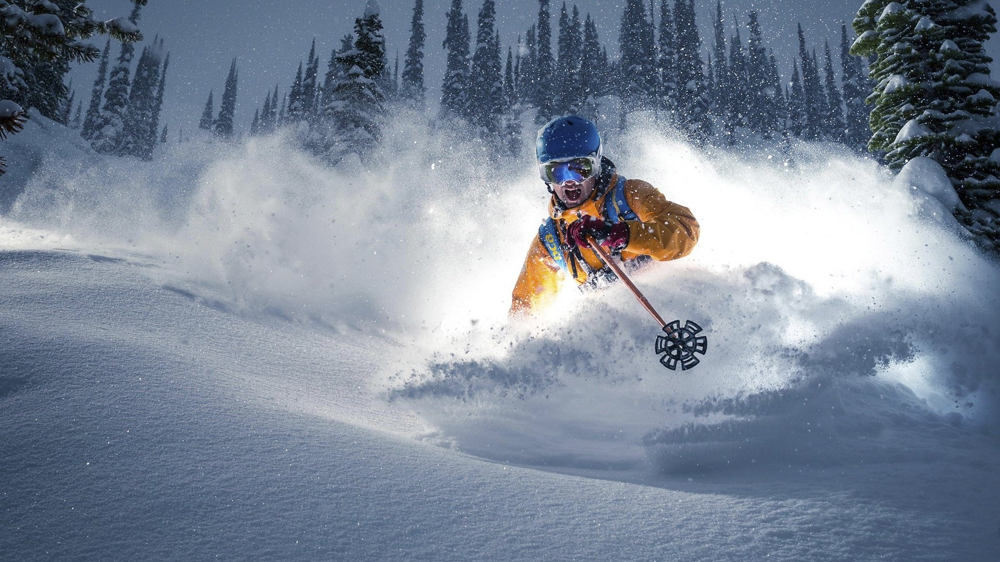
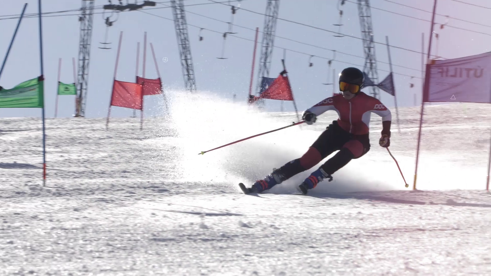
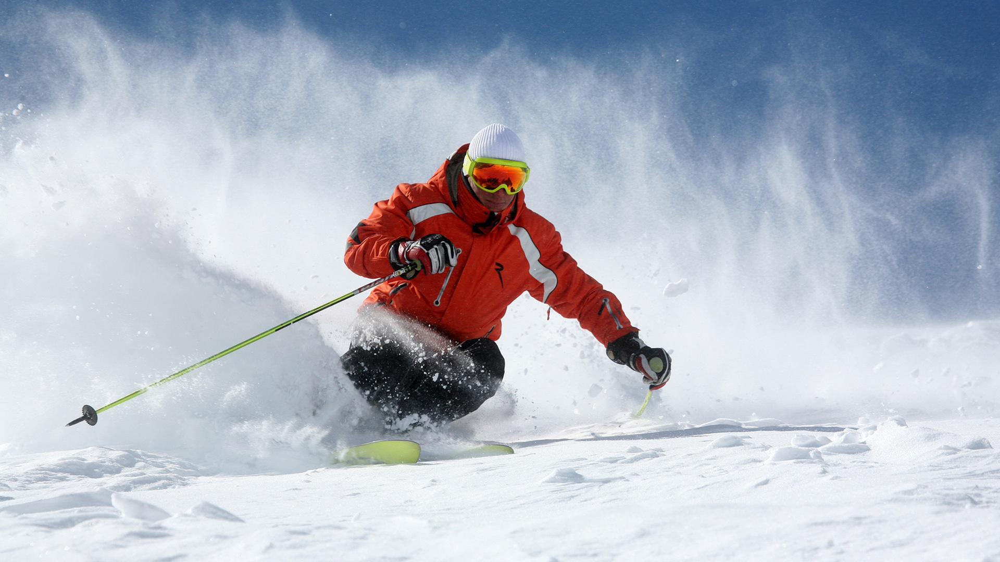
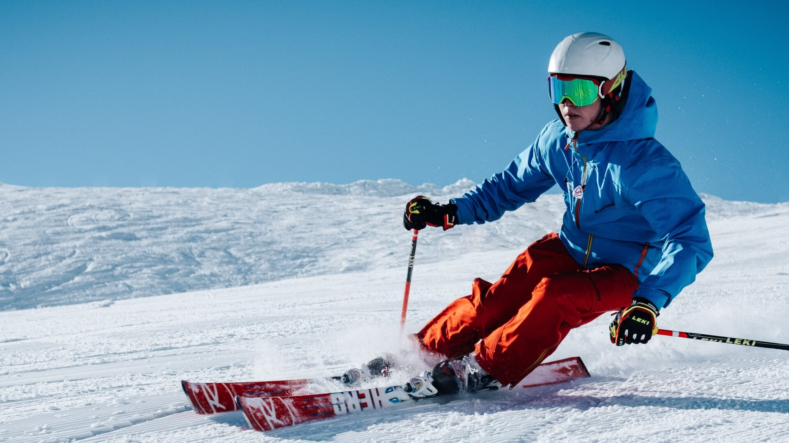
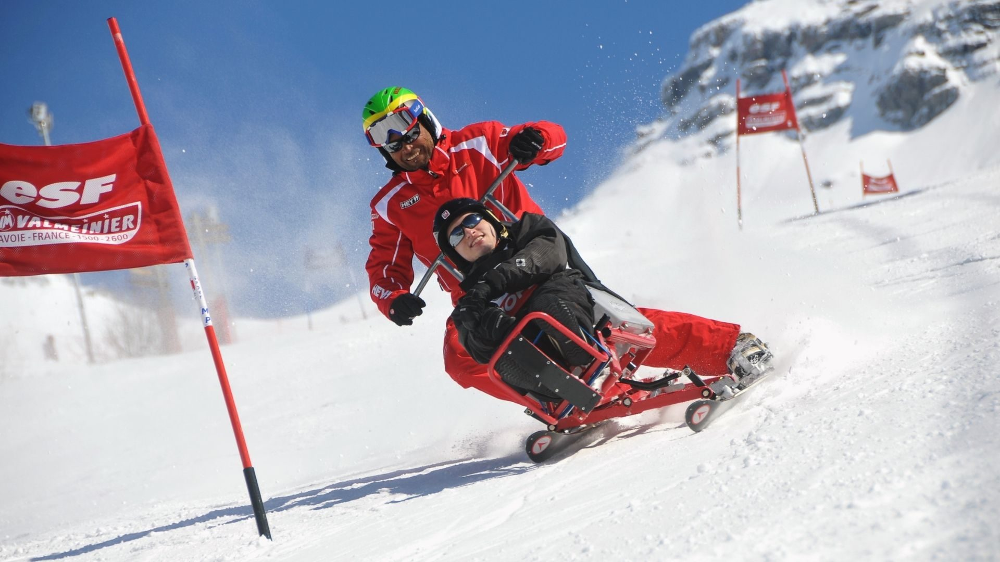
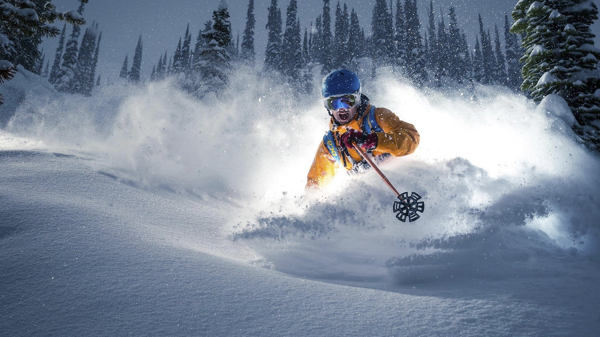
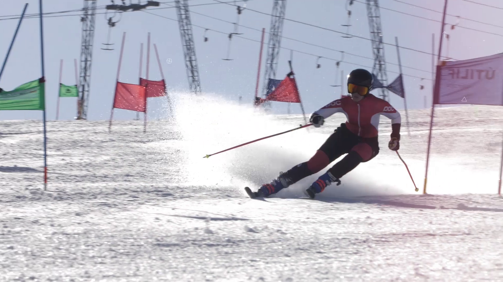
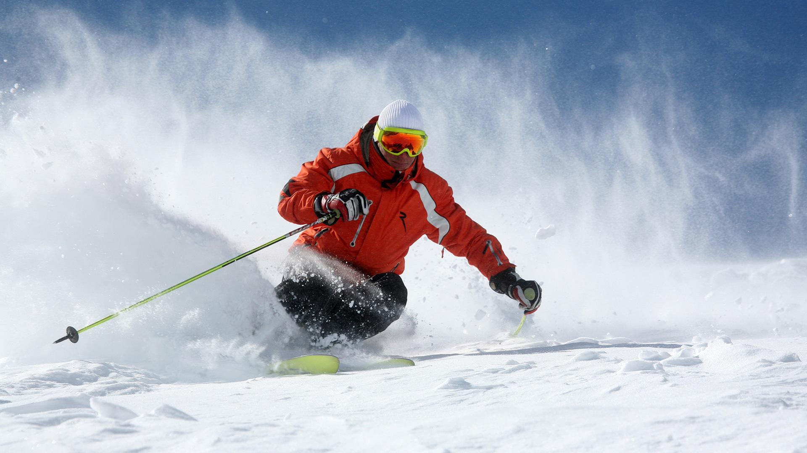
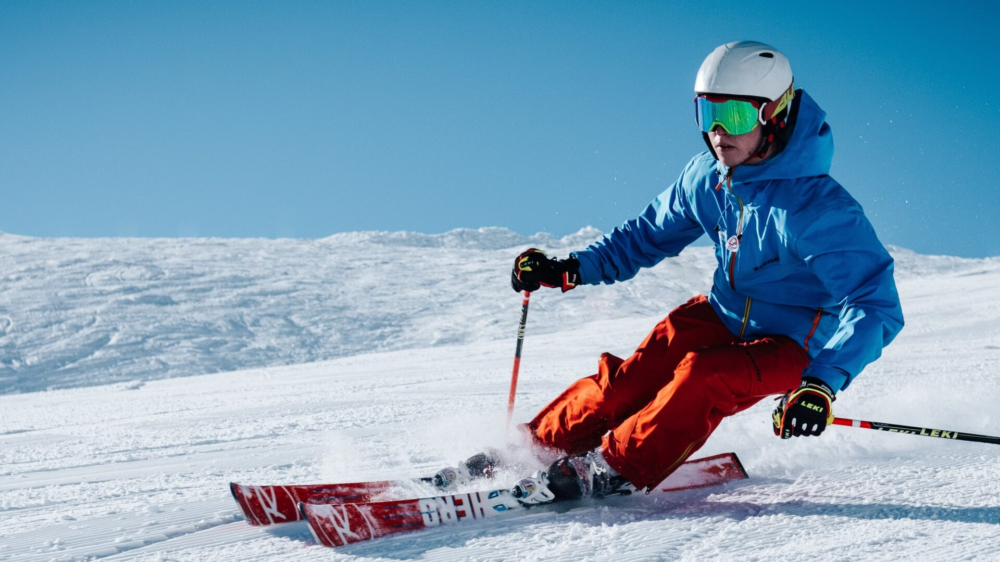
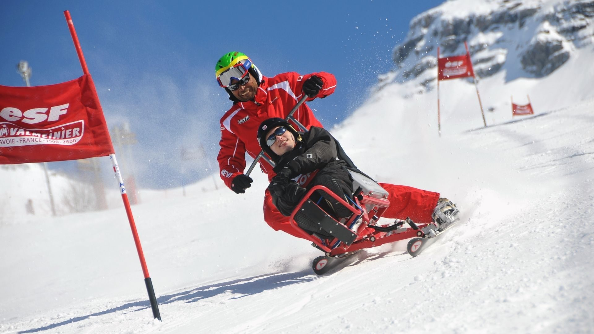
⬆
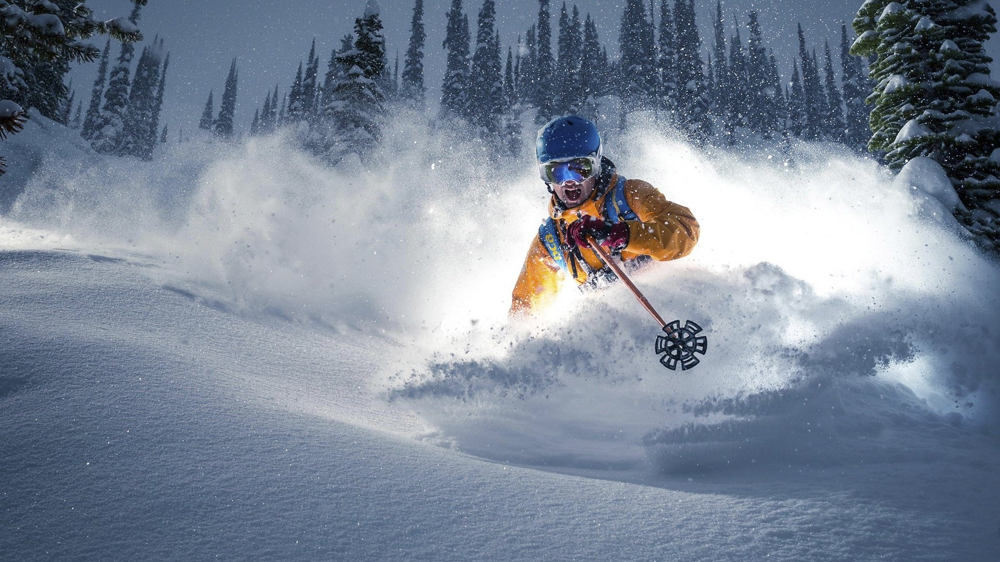
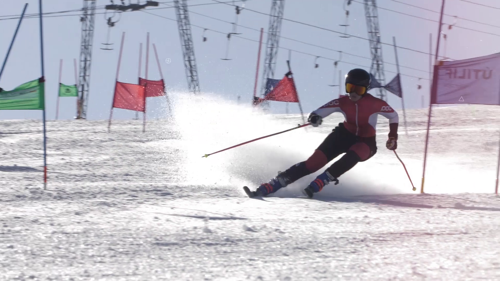
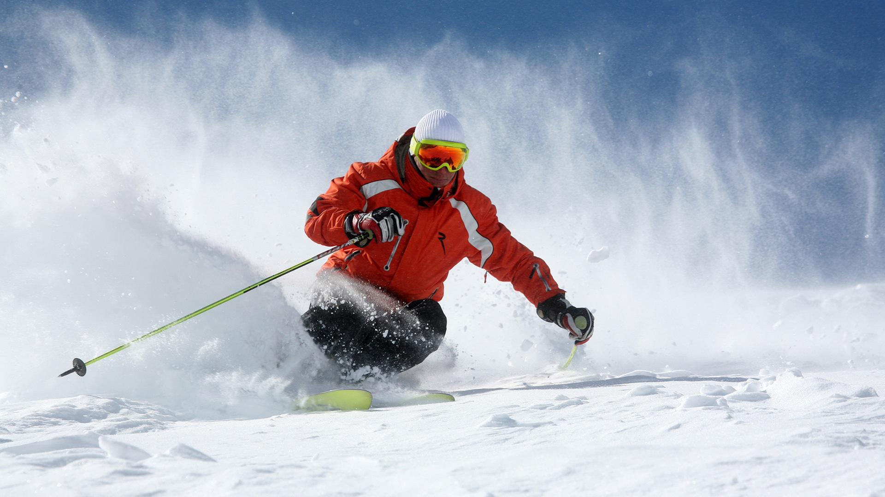
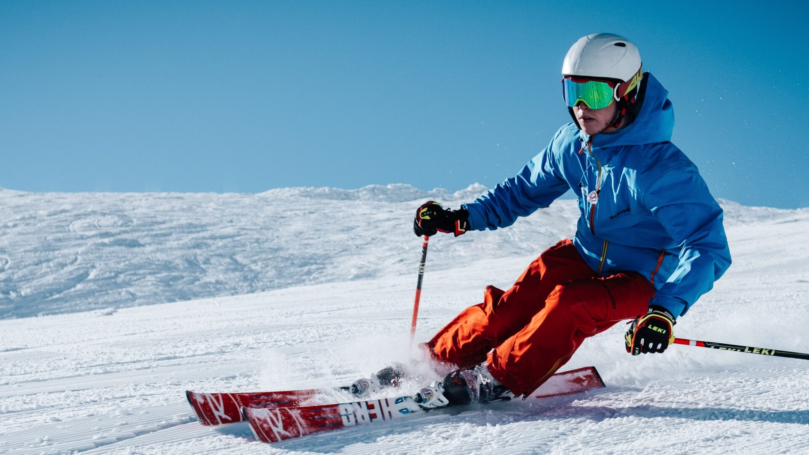
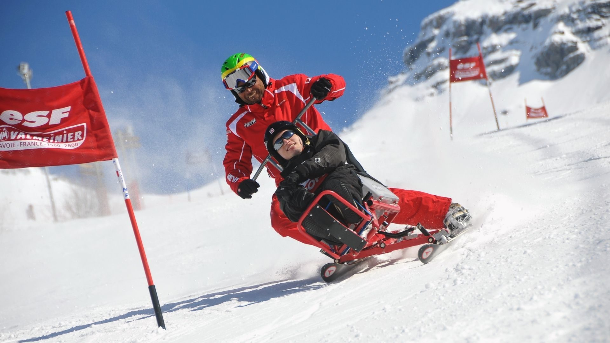
Гірськолижний спорт — загальна назва для кількох зимових спортивних дисциплін, у яких спортсмени змагаються за найшвидший спуск із гори на лижах спеціально підготовленою трасою. Гірськолижний спорт користується великою популярністю як вид активного відпочинку.
На відміну від лижних перегонів у гірськолижному спорті використовуються кріплення з фіксованою п'яткою.
Гірськолижний спорт включає в себе змагання із спеціального слалому, гігантського слалому, супергігантського слалому, гірськолижної комбінації та швидкісного спуску, які належать до швидкісних дисциплін. Інша група дисциплін об'єднана під загальною назвою фрістайл. В цих дисциплінах важлива не тільки швидкість, а й суддівська оцінка якості виконання.
Найшвидша з гірськолижних дисциплін — швидкісний спуск, де спортмени можуть розвивати швидкість понад 100 км/год. Найтехнічніша — слалом, в якому лижник повинен виконати велике число поворотів, щоб пройти через ворота, відзначені прапорцями.
Гірськолижний спорт популярний усюди у світі, де є гори, сніг і відповідна інфраструктура. Здебільшого змагання проводяться на гірськолижних курортах, які є водночас місцями масового активного відпочинку. Спуск на лижах з гори набрав популярності з винаходом та розвитком підіймачів.
Гірськолижний спорт є олімпійським видом спорту.
До програми Олімпійських ігор гірськолижний спорт входить, починаючи з Олімпіади 1936. Першою дисципліною була гірськолижна комбінація. На Олімпіаді 2010 у Ванкувері розігруються 10 комплектів нагород — по п'ять серед чоловіків та жінок.